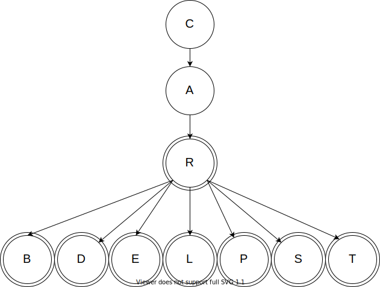

Welcome!
This page is the main page for Requirements Analysis
This page is the main page for Requirements Analysis
In this module, we will discuss how we can determine which data structure we should choose when storing real-world data. We’ll typically make this decision based on the characteristics of the data we would like to store. In general, the data structures we’ve learned often work together well and complement each other, as we saw in Dijkstra’s algorithm. In some cases, one structure can be utilized to implement another, such as using a linked list to implement a stack or a queue.
When selecting a data structure for a particular data set, there are a few considerations we should keep in mind.
The first consideration is: does this data structure work for our data? To answer this, we would want to the characteristics in the data and then determine if our chosen data structure:
Once we have chosen a possible data structure, we also must consider if the choice clearly makes sense to another person who reviews our work. Some questions we may want to ask:
Finally, we should always consider the performance of our program when selecting a data structure. In some cases, the most straightforward data structure may not always be the most efficient, so at times there is a trade off between performance and simplicity. Consider the hash table structure - it may seem like a more complicated array or linked list. But, if we need to find a specific item in the structure, a hash table is typically much faster due to the use of hashes. That increase in complexity pays off in faster performance. So, when analyzing data structures for performance, we typically look at these things:
We will address this particular facet in the next chapter. For now, we will focus on the first two portions.
The first step toward determining which data structure to use relies heavily on the format of the data. By looking at the data and trying to understand what it contains and how it works, we can get a better idea of what data structure would work best to represent the data. Here, we will discuss some main types of data that we could encounter.
Unique data is the type of data where each element in a group must be unique - there can be no duplicates. However, in many cases the data itself doesn’t have a sequence or fixed ordering, we simply care if an element is present in the group or not. Some examples of unique data:
This data is best stored in the set data structure, usually built using a hash table as we learned previously.
However, many times this data may be included along with other data (a person’s ID number is part of the person’s record), so sets are rarely used in practice. Instead, we can simply modify other data structures to enforce the uniqueness property we desire on those attributes. In addition, we see this concept come up again in relational databases, where particular attributes can be assigned a property to enforce the rule that each element must be unique.
Linear data refers to data that has a sequence or fixed ordering. This can include
This data is typically stored in the array or linked list data structure, depending on how we intend to use it and what algorithms will be performed on the data.
We can think of this type of data as precisely one after another. This means that from one element there will be exactly one “next” element.
Finally, we can also adapt these data structures to represent FIFO (first-in, first-out) and LIFO (last-in, first-out) data structures using queues and stacks. As we saw previously, most implementations of queues and stacks are simply adaptations of existing linear data structures, usually the linked list.
Associative data is data where a key is associated with a value, usually in order to quickly find and retrieve the value based on its key. Some examples are:
We typically use a hash table to store this data in our programs.
However, in many cases this data could also be stored in a relational database just as easily, and in most industry programs that may also be a good choice here. Since we haven’t yet learned about relational databases, we’ll just continue to use hash tables for now.
Hierarchical data refers to data where elements can be seen as above, below, or on the same level as other elements. This can include
In contrast to linear data, hierarchical data can have multiple elements following a single element. In hierarchical data, each element has exactly one element prior to it. We typically use some form of a tree data structure to store hierarchical data.
Relational data refers to data where elements are ‘close to’ or ‘far from’ other elements. We can also think of this as ‘more similar’ and ’less similar’ as well. This can include
In a relational data set, any element can be ‘related’ to any other element. We typically use a graph data structure to store relational data.
The last type of data we will discuss is prioritized data. Here, we want to store a data element along with a priority, and then be able to quickly retrieve the element with the highest or lowest priority, depending on use. This could include:
For this data, we typically use an implementation of a priority queue based on a heap. It is important to remember that the heap does not store the data in sorted order - otherwise we would just use a linear data structure for this. Instead, it guarantees that the next element is always stored at the front of the structure for easy access, and it includes a process to quickly determine the new next element. We’ll learn a bit more about why this is so helpful in the next chapter covering performance.
It is important to note that when we are given a set of requirements for a project, the developer may not use the words to classify the types of data. Based on what a user tells us, we want to be able to infer what kind of shape the data could take.
In general, trees are good for hierarchical data. While trees can be used for linear data, it is inefficient to implement them in that way (from a certain point of view, a linked list is simply a tree where each node can only have one child). When data points have many predecessors, trees cannot be used. Thus, trees are not suitable for most relational data.
To recap, we defined a tree as having the following structure:
In this course, we used trees to represent family lineage and biologic classifications. Once we have the data in a tree, we can perform both preorder and postorder traversals to see all of the data, and we can use the structure of the tree to determine if two elements are related as ancestor and descendant or not.
We added constraints to trees to give us special types of trees, discussed below.
A trie is a type of tree with some special characteristics, which are:
Tries are best suited for data sets in which elements have similar prefixes. In this course we focused on tries to represent words in a language, which is the most common use of tries. We used tries for an auto-complete style application.

Tries are a very efficient way of storing dense hierarchical data, since each node in the trie only stores a single portion of the overall data. They also allow quickly looking up if a particular element or path exists - usually much quicker than looking through a linear list of words.
A binary tree is a type of tree with some special characteristics, which are:
Binary trees are the ideal structure to use when we have a data set with a well defined ordering. Once we have the data stored in a binary tree, we can also do an inorder traversal, which will access the elements in the tree in sorted order. We will discuss in the next chapter why we might want to choose a binary tree based on its performance.
Graphs are a good data structure for relational data. This would include data in which elements can have some sort of similarity or distance defined between those elements. This measure of similarity between elements can be defined as realistically or abstractly as needed for the data set. The distance can be as simple as listing neighbors or adjacent elements.
Graphs are multidimensional data structures that can represent many different types of data using nodes and edges. We can have graphs that are weighted and/or directed and we have introduced two ways we can represent graphs:
The first implementation of graphs that we looked at were matrix graphs. In this implementation, we had an array for the nodes and a two dimensional array for all of the possible edges.
The second implementation of graphs were list graphs. For this implementation, we had a single array of graph node objects where the graph node objects tracked their own edges.
Recall that we discussed sparse and dense graphs. Matrix graphs are better for dense graphs since a majority of the elements in the two dimensional array of edges will be filled. A great example of a dense graph would be relationships in a small community, where each person is connected to each other person in some way.
List graphs are better for sparse graphs, since each node only needs to store the outgoing edges it is connected to. This eliminates a large amount of the overhead that would be present in a matrix graph if there were thousands of nodes and each node was only connected to a few other nodes. A great example of a sparse graph would be a larger social network such as Facebook. Facebook has over a billion users, but each user has on average only a few hundred connections. So, it is much easier to store a list of those few hundred connections instead of a two dimensional matrix that has over one quintillion ($10^{18}$) elements.
In the next chapter, we will discuss the specific implications of using one or the other. However, in our requirement analysis it is important to take this into consideration. If we have relational data where many elements are considered to be connected to many other elements, then a matrix graph will be preferred. If the elements of our data set are infrequently connected, then a list graph is the better choice.
The last structure we covered were priority queues. On their own, these are good for hierarchical data. We discussed using priority queues for ticketing systems where the priority is the cost or urgency. In the project, we utilized priority queues in conjunction with Dijkstra’s algorithm.
A priority queue is a data structure which contains elements and each element has an associated priority value. The priority for an element corresponds to its importance. For this course, we implemented priority queues using heaps.
A key point of priority queues is that the priority for a value can change. This is reflected by nodes moving up (via push up) or down (via push down) through the priority queue.
In contrast, a tree has a generally fixed order. Consider the file tree as a conceptual example, it is not practical for a parent folder to switch places with a child folder.
In real world applications, it won’t always be a straightforward choice to use one structure over another. Users may come to us with unclear ideas of what they are looking for and we will need to be able to infer what structure is best suited for their needs based on what we can learn from them. Typically, those describing applications to us may not be familiar with the nomenclature we use as programmers. Instead, we have to look for clues about how the data is structured and used to help us choose the most appropriate data structures
Below we have some examples with possible solutions. We say possible solutions because there may be other ways that we could implement things. It is important that no matter what structure or algorithm we use, we should always document why we chose our answer. If someone else were to join on the project at a later time, it is important that they understand our reasoning.
A manager at a costume shop has requested that we do some data management for their online catalog. They say:
Take a moment to think on how you might go about this. Remember, there can be multiple ways of solving these problems. We need to be sure that we can articulate and justify our answers.
This is a situation where we could potentially use all three data structures!
First, we could use a tree to represent the search refinement. Thinking along the lines of a data structure, each category and subsequently each product will have exactly one parent. While something like ‘wigs’ shows up in all three categories, you wouldn’t want dog wigs showing up in a search for adult wigs. Thus, there is a unique ancestry for each category and product.
In this scenario we had a fixed ordering of our hierarchy. If the manager wanted users to be able to sort by costume part and then who it was for, our tree would not hold up.
The second portion that was requested was a recommendation system. We could implement this in two parts. The first would be a graph in which the nodes are the products and they are connected based on the similarity of the products.
For example, a purple childrens wig will be very similar to a childrens blue wig but it would be very different from an adults clown shoes. Thus, our graph would have a heavily weighted connection between the childrens purple and blue wig and there would be an edge with a very small weight between the purple wig and adult clown shoes. We can obtain this information from the manager. Since each product will be connected to every other product, a matrix graph would be best suited here.
Then once we have the graph, we could implement a priority queue. The priority queue would be built based off of the users search. When a user searches for a product, we would refer to our graph and get other similar products and enqueue them. The priority would be similarity to the searched products and the item would be the recommended product. As they continue to search, we would dequeue an element if the user selects it and we would change the priority of elements based on commonalities in the searches.
A friend approaches you about their idea for a video game and ask how they could use different data structures to produce the game. They tell us about their game which is a sandbox game with no defined goals. Users can do tasks at their own chosen speed and there is no real “completion” of the game. They say:
Take a moment to think on how you might go about this. Remember, there can be multiple ways of solving these problems. We need to be sure that we can articulate and justify our answers.
Again, this is a situation where we could potentially use three data structures!
We can use a priority queue to suggest tasks for the players to do. In this priority queue, the priority would be the payout and the item would be the task itself. As tasks get completed, we would dequeue them.
We can use a trie to represent the set of shortcuts. Below is a small sample of how we can implement our trie.
Since our friend mentioned that similar tasks should have similar combinations, a trie will fit well. These key combinations will have similar prefixes, so we can save ourselves space to store them by using a trie.
Finally, for the world layout we could use a graph. Similar to the maze project or weather station project, we can have nodes represent points on a plot and the edges will represent connections. The nodes will now have three coordinates, (x,y,z), rather than two, (x,y) or (latitude, longitude) and they will have an associated type (dirt, tree, rock, etc.).
Two nodes will be connected if they directly adjacent. Players can harvest cubes such as soil or limestone, and it would be removed from the world. We would utilize our remove node function to reflect this kind of action. Similarly, players can build up the world in spaces that allow, such as the dirt pile in an open area, and for that we can use our add node function as well as the appropriate add edge functions.
In our implementation of a graph, it would be better to use a list graph. Each block will be connected to at most six other blocks.